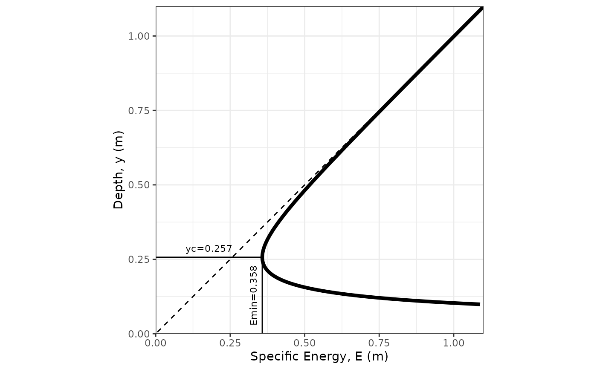

Creates a specific energy diagram for a trapezoidal channel
Source:R/spec_energy_trap.R
spec_energy_trap.RdThis function plots a specific energy diagram of a trapezoidal (including rectangular and triangular) channel, with annotation of critical depth and minimum specific energy.
Usage
spec_energy_trap(
Q = NULL,
b = NULL,
m = NULL,
y = NULL,
scale = 3,
units = c("SI", "Eng")
)Arguments
- Q
flow rate [\(m^3 s^{-1}\) or \(ft^3 s^{-1}\)]
- b
bottom width [\(m\) or \(ft\)]
- m
side slope (H:1) [unitless]
- y
depth(s) of flow (a numeric vector of length <= 2) [\(m\) or \(ft\)] (optional)
- scale
multiplier (of yc) for axis scales (default is 3)
- units
character vector that contains the system of units [options are
SIfor International System of Units andEngfor English (US customary) units.
Details
Specific Energy, E, is the energy, expressed as a head (i.e., the mechanical energy per unit weight of the water, with units of length) relative to the channel bottom. It is calculated as: $$E = y+\alpha\frac{Q^{2}}{2g\,A^{2}} = y+\alpha\frac{V^{2}}{2g}$$ where \(y\) is flow depth, \(A\) is the cross-sectional flow area, \({V}=\frac{Q}{A}\), and and \(\alpha\) is a kinetic energy correction factor to account for non-uniform velocities across the cross-section; \(\alpha=1.0\) in this function (as is commonly assumed).
Examples
# Draw a specific energy diagram for a cross-section with flow 1, width 2, side slope 3:1 (H:V)
spec_energy_trap(Q = 1.0, b = 2.0, m = 3.0, scale = 4, units = "SI")

# Draw the same specific energy diagram adding lines for depths, y = 0.5 and 0.8 m
spec_energy_trap(Q = 1.0, b = 2.0, m = 3.0, scale = 4, y = c(0.5, 0.8), units = "SI")